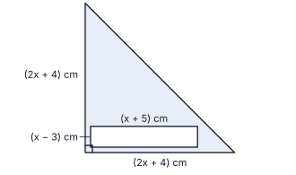
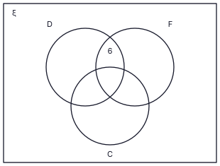

The additional 10 minutes are for reading the paper, selecting the questions and deciding the order in which to answer them.
Select five questions from Part A and five questions from Part B and answer ten questions in all.
Show the relevant steps and the correct units when answering.
Each question carries 10 marks. The marks for each part are shown at the right-hand side.
Write your answers on the separate answer sheets provided. Where the question says “copy the figure”, copy it on to your answer sheet.
Use only a straight edge with a cm/mm scale and a compass for constructions; construction lines must be clearly visible. Mathematical tables may be used.
Volume of a right pyramid of base area A and height h is 13Ah. Volume of a right circular cylinder of base radius r and height h is πr2h.
Part A
Answer only five questions. (10 marks each)
1.
Hasini and Supun each need a water pump, costing Rs 72 000, for their tea estates. Hasini takes a bank loan of Rs 72 000 for one year and settles it with a single payment of Rs 82 800 at the end of the year. Supun buys his pump on instalments: he pays 12 equal monthly instalments of Rs 6 520, the first one month after the purchase, and the interest is calculated on the reducing balance. Show that the annual interest rate charged under Supun’s method is higher than the annual interest rate of Hasini’s loan.
(a)
Find the annual interest rate of Hasini’s loan.
(3 marks)
(b)
Find the total interest that Supun pays.
(2 marks)
(c)
Calculate the annual interest rate under Supun’s method.
(4 marks)
(d)
Hence show that the required result is true.
(1 mark)
2.
The incomplete table shows some values of a quadratic function y = f(x) for −3 ≤ x ≤ 5.
x
−3
−2
−1
0
1
2
3
4
5
y
7
0
−5
−8
−9
−8
…
0
7
(i)
Using the symmetry of the graph, write the value of y when x = 3.
(1 mark)
(ii)
Choosing a suitable scale for each axis, draw the graph of the function on a sheet of graph paper.
(3 marks)
(iii)
(a)
Write the x-coordinates of the points where the graph meets the x-axis.
(1 mark)
(b)
Using them, write the function in the form y = (x + p)(x + q).
(1 mark)
(iv)
The straight line y = −2 meets the graph at the points A and B. Using the graph,
(a)
write the range of values of x for which y < −2,
(2 marks)
(b)
find the length of AB, to the first decimal place.
(2 marks)
3.
At a temple festival, a vertical decoration pole BD stands on level ground AE, where B is a point on AE. C is the mid-point of BD. Ropes AC and DE are tied as shown in the figure, with AC = BE = 36 m and ∠CAB = 18°20′. (Copy the figure on to your answer sheet.)Using mathematical tables,
(i)
find the length of BC, to two decimal places,
(3 marks)
(ii)
find the size of ∠DEB, to the nearest ten minutes,
(4 marks)
(iii)
show that the angle of inclination of DE to the ground is greater than the angle of inclination of AC to the ground by more than 13°.
(3 marks)
4.
A flag made for a sports meet is in the shape of a right-angled isosceles triangle, whose two equal sides are each (2x + 4) cm long. A rectangle of sides (x + 5) cm and (x − 3) cm is printed on it for the name of the school, and the rest of the flag is coloured red. The area coloured red is 77 cm2.

(i)
Show that x2 + 6x − 54 = 0.
(4 marks)
(ii)
Solve the equation and find the value of x to the nearest whole number. (Take √7 = 2.65.)
(3 marks)
(iii)
Using the value of x found in (ii), show that the longest edge of the flag is longer than 19 cm. (Take √2 = 1.41.)
(3 marks)
5.
For a temple festival, Ishara buys small packs and large packs of paper lanterns. A small pack costs Rs 90 and a large pack costs Rs 160. She buys 60 packs altogether and pays Rs 7 150 in all.
(i)
Taking the number of small packs as x and the number of large packs as y, form a pair of simultaneous equations and solve them to find the number of packs of each type.
(5 marks)
(ii)
Each large pack contains 4 more lanterns than each small pack. There are 1 000 lanterns altogether in the packs she bought. Find the number of lanterns in a small pack.
(5 marks)
6.
Malith plucks tea leaves at a tea estate. The table shows the mass of tea leaves (in whole kilograms) that he plucked each day, during a period of 40 days.
Mass of tea leaves (kg)
31 – 40
41 – 50
51 – 60
61 – 70
71 – 80
Number of days
4
8
12
10
6
(i)
Calculate the mean mass of tea leaves plucked per day.
(3 marks)
(ii)
Find the expected total mass of tea leaves he plucks in 30 days.
(2 marks)
(iii)
Malith is paid Rs 48 for each kilogram plucked. Find the income he is expected to earn in those 30 days.
(3 marks)
(iv)
Find the minimum possible total mass of tea leaves plucked on the days on which he plucked less than 51 kg.
(2 marks)
Part B
Answer only five questions. (10 marks each)
7.
Use only a straight edge with a cm/mm scale and a compass for this question. Construction lines must be clearly visible.
(i)
Construct a line segment AB = 8 cm. At B construct ∠ABX = 120° and construct the bisector BY of ∠ABX.
(3 marks)
(ii)
Mark the point C on BY such that BC = BA, and join AC.
(1 mark)
(iii)
Construct the perpendicular bisector of AC, which meets AC at M. With AC as the diameter, construct the semicircle on the side of AC away from B.
(3 marks)
(iv)
Construct the straight line through A parallel to BC, meeting the semicircle at D. Join CD.
(2 marks)
(v)
Write, with reasons, the size of ∠ACD.
(1 mark)
8.
ABCD is a parallelogram. E is the mid-point of BC, and F is the point on AB such that AF = 25 AB. The straight line FE produced meets DC produced at G, and meets DA produced at H. (Copy the figure on to your answer sheet.)
(i)
Show that the triangles BFE and CGE are congruent.
(3 marks)
(ii)
Join BG and FC, and show that BFCG is a parallelogram.
(2 marks)
(iii)
Show that the triangles AFH and BFE are equiangular.
(2 marks)
(iv)
Hence show that AH = 13 AD.
(3 marks)
9.
Supun, a metal worker, melts 6 identical solid metal pyramids without any loss of metal and makes one solid right circular cylinder of base radius r and height 4r. Each pyramid has a square base of side 2a and height 3a.
(i)
Show that a3 = π6r3.
(3 marks)
(ii)
When r = 6.3 cm and π = 3.14, find the value of a3 using logarithms, and hence find a to the nearest centimetre.
(4 marks)
(iii)
A pyramid identical to the above is cut out of a solid cuboid of square base of side 2a and height 3a. Using the value of a found in (ii) (to the nearest cm), find the volume of the remaining solid.
(3 marks)
10.
Hasini and Ishara practise rope skipping for the sports meet. On the first day Hasini skips 11 times, and on each following day she skips 4 more times than on the previous day. She completes her practice target on the 13th day. Ishara increases the number of skips by 3 each day, and completes the same total number of skips on the 14th day.
(i)
Write the number of skips Hasini does on days 1, 2 and 3.
(1 mark)
(ii)
Find the number of skips she does on the 13th day.
(2 marks)
(iii)
Find the total number of skips of her practice target.
(2 marks)
(iv)
Find the number of skips Ishara does on the first day.
(3 marks)
(v)
On which day do the two girls skip the same number of times?
(2 marks)
11.
In the figure, O is the centre of the circle. PA and PB are the tangents drawn to the circle from the external point P, touching it at A and B respectively. C is a point on the major arc AB. Copy the figure on to your answer sheet and join OA and OB.
(i)
Show that PAOB is a cyclic quadrilateral, and that ∠APB + 2∠ACB = 180°.
(5 marks)
(ii)
Name two angles that are equal to ∠PAB, giving reasons.
(5 marks)
12.
90 volunteers helped at a temple festival. Each of them helped with one or more of the three tasks: decorations (D), food (F) and cleaning (C), or with none of them. The number of volunteers who helped with decorations and food only is shown in the Venn diagram. (Copy the Venn diagram on to your answer sheet and use it to answer the following.) 8 volunteers helped with none of the three tasks, and 36 volunteers helped with at least two of the tasks.

(i)
Find the number of volunteers who helped with exactly one of the three tasks.
(3 marks)
(ii)
The number of volunteers who helped with all three tasks is equal to the number who helped with exactly two of the tasks. Find the number who helped with all three tasks.
(3 marks)
(iii)
The number who helped with food and cleaning only is twice the number who helped with decorations and cleaning only. Find the number who helped with decorations and cleaning only.
(2 marks)
(iv)
40 volunteers helped with food. Find the number who helped with food only.